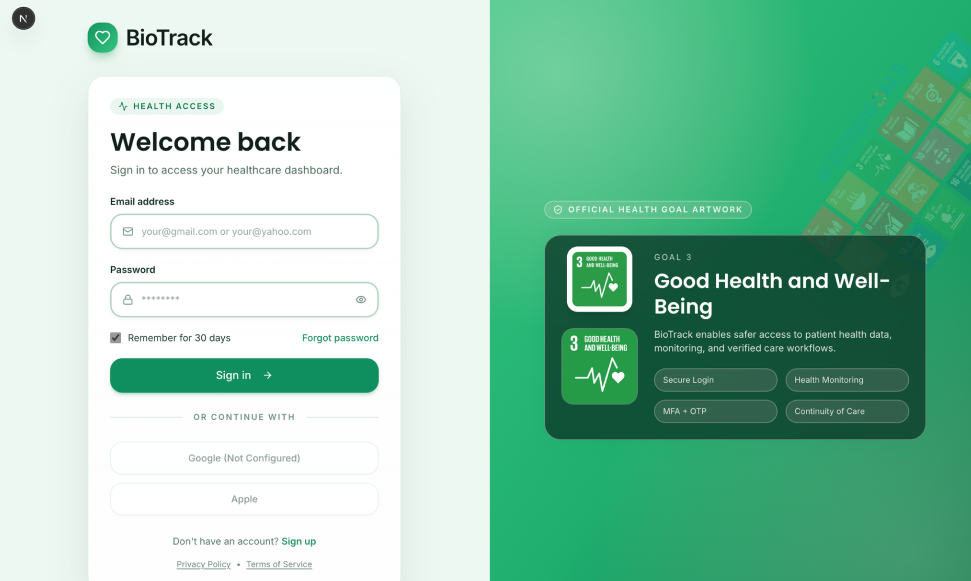
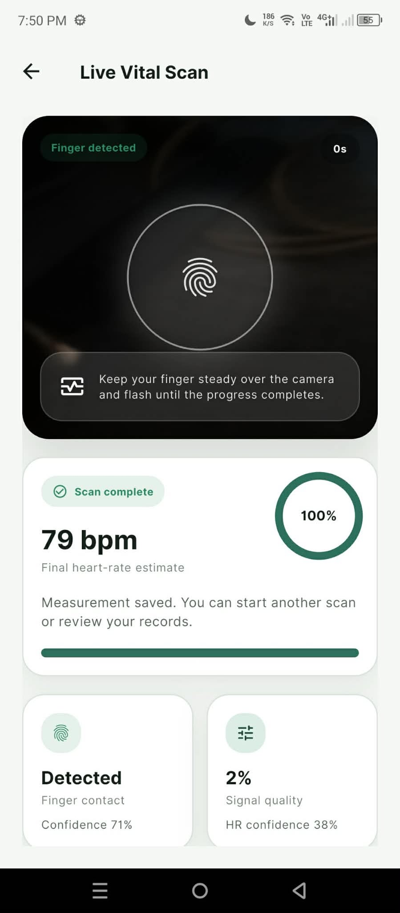
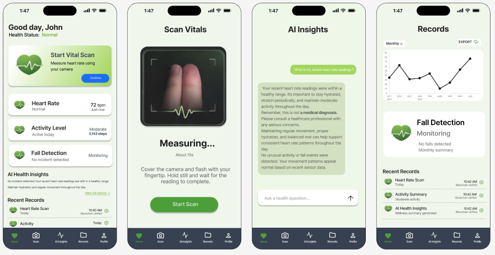

Patient monitoring
Review vital readings, recent health information, and AI-assisted risk guidance.
Project Case Study
A cross-platform healthcare monitoring system designed to help patients understand their vital signs while giving providers secure, timely access to health records, alerts, and trends.

The implemented and documented product areas shown in this case study.
Patients and community healthcare providers need accessible tools for monitoring vital signs, recognizing risks early, and maintaining trustworthy records across different points of care.
BioTrack combines patient monitoring, provider workflows, AI-assisted insights, alerts, and blockchain-backed integrity checks in connected Flutter, Next.js, and desktop experiences.
BioTrack connects a secure web experience with mobile vital monitoring, AI-assisted insights, records, and a live camera-based scan flow.


These summaries represent BioTrack's implemented product areas. Full source access remains controlled because BioTrack is a team academic project.
Review vital readings, recent health information, and AI-assisted risk guidance.
Monitor assigned patients, examine trends, and respond to priority alerts.
Confirm record authenticity through stored hashes, timestamps, and integrity status.
Healthcare information can become overwhelming quickly. I focused on clear hierarchy, consistent status language, and role-specific screens so each user sees the actions and information relevant to them.
BioTrack expanded my experience with multi-platform design, frontend integration, complex role-based workflows, and presenting sensitive technical information in a clear, user-centered way.
The complete repository is private because this is a team academic project. A guided demonstration and selected code samples can be provided during an interview.